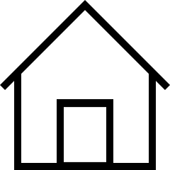

메뉴1
메뉴2
메뉴3
메뉴4
FAQ
시계관련
Q. 쿼츠 무브먼트란 무엇인가요?
쿼츠 무브먼트는 배터리(전기)로 움직이는 시계 무브먼트로서 쿼츠 크리스탈 레귤레이터(시간 측정 장치)가 장착되어 있습니다.
Q. 오토매틱 무브먼트란 무엇인가요?
오토매틱 무브먼트는 착용자의 손목 움직임에 의해 태엽이 감기는 기계식 시계 무브먼트입니다.
Q. 크로노그래프란 무엇입니까?
크로노그래프란 푸셔(스타트/스톱/리셋)를 조작하여 시간을 측정하거나 여러 번 연속으로 시간을 측정하는 추가 기능이 장착된 시계를 말합니다.
Q. 시계를 착용한 손목에 팔찌를 같이 착용해도 괜찮나요?
시계의 외관을 최상의 상태로 유지하고 마모가 조기에 발생하는 것을 예방하려면 시계와 팔찌를 같은 손목에 착용하지 않는 것이 좋습니다.
결제관련
Q. 결제 완료 후, 취소 문자를 받았어요
결제 완료 후 취소 문자를 수신하셨다면 결제수단의 1차 승인은 진행되었으나, 구매 상품의 재고 부족으로 최종 결제가 진행되지 못한 경우입니다.
Q. 상품준비중인데 수령 전이면 주문취소가 되나요?
주문 상태가 상품준비중인 경우,출고 작업이 완료되어 상품이 이동중에 있으므로 주문취소에 도움드리기 어렵습니다.
Q. 주문취소를 하였으나, 신용카드 청구서에 요금이 청구되었어요
신용카드의 경우, 고객님의 결제일 기준으로 사용금액이 청구됩니다. 실제 주문 취소일에 따라 해당 월 청구서에 취소 금액이 반영되지 않을 수 있습니다.
Q. 상품을 반품했는데 언제 환불되나요?
반품 신청 상품의 입고가 완료되면반품 상품 확인 후, 환불이 진행됩니다.
배송관련
Q. 송장번호 조회 시, 배송추적이 되지 않습니다
송장번호는 등록된 당일 혹은 익일 상품 배송이 진행됨과 동시에 배송추적이 가능합니다.
Q. 원하는 날짜에 배송받을 수 있나요?
주문 순서에 따라 순차적으로 출고 및 발송을 진행하고 있으므로 지정일 배송이 어려운 점 양해 부탁드립니다.
Q. 재고/재입고 일정은 어떻게 확인하나요?
상품 재고/재입고 일정은 내부 사정에 따라 변동될 수 있어 정확히 안내 드리기 어려운 점 양해 부탁드립니다.